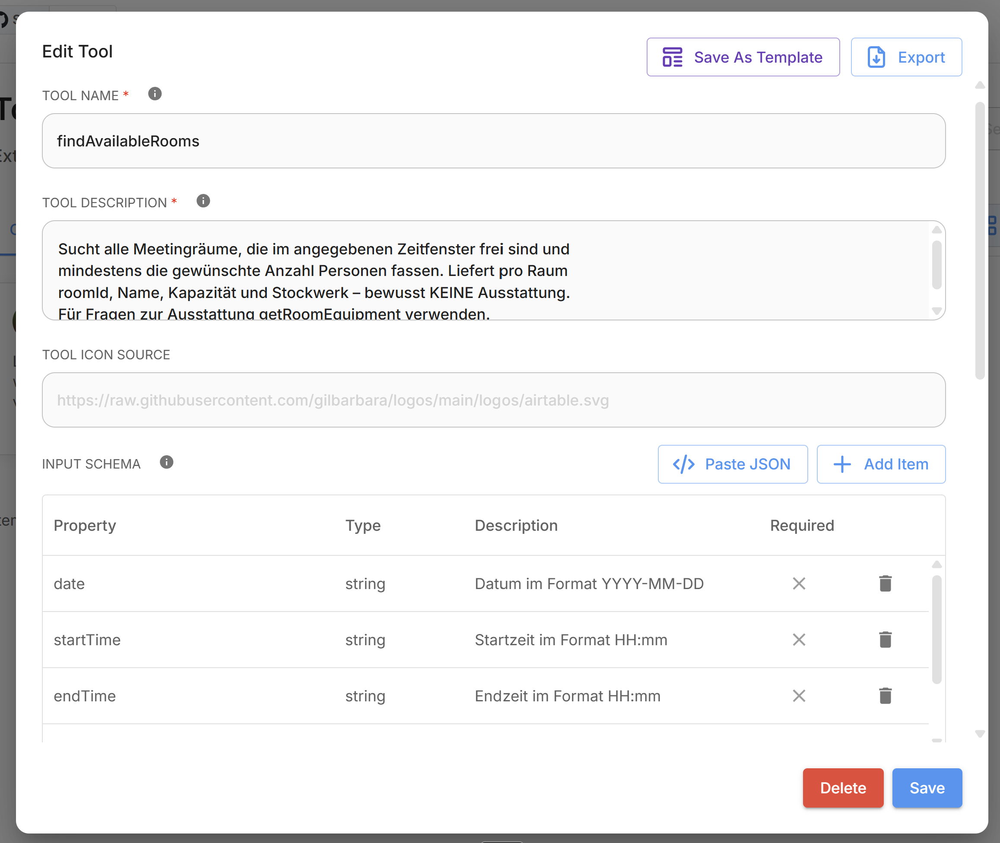
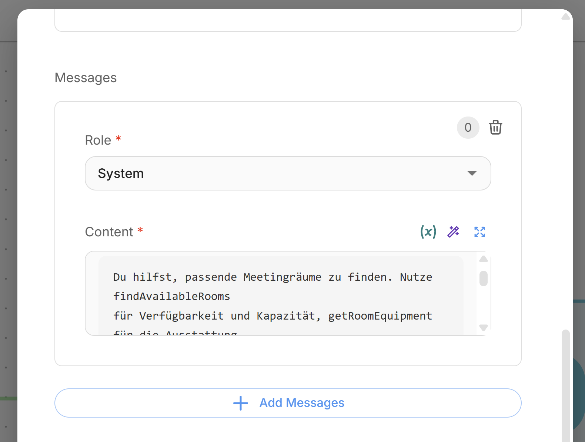
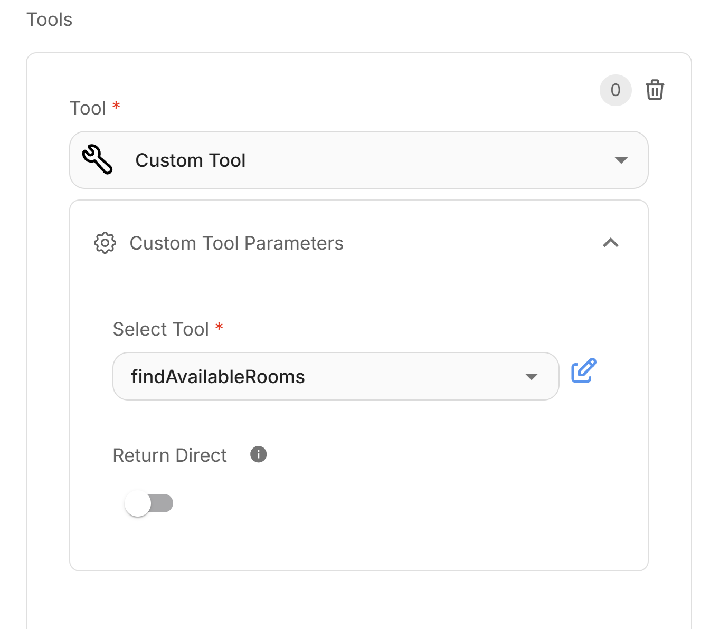
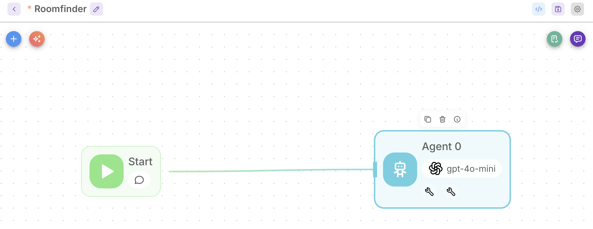
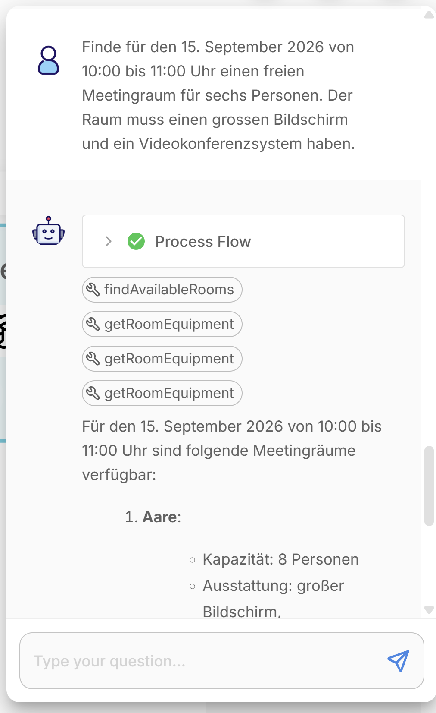

Hands-On Labs
Genug Theorie – jetzt baust du selbst. In den letzten sechs Modulen hast du gelernt, was einen Agenten ausmacht: der Loop (Modul 2), die Schichten LLM · Agent · Harness (Modul 3) und die Tools als Hände des Agenten (Modul 4). All das siehst du jetzt live, an einem Agenten, den du in ~30–40 Minuten selbst zusammensteckst.
Die Labs sind freiwillig – aber sie sind der Teil dieser CBT, der am meisten hängen bleibt. Lab 1 (empfohlen) ist geführt: ein einziger, klar beschriebener Pfad mit fixierter Flowise-Version, zwei fertigen Tools und erwarteten Ergebnissen nach jedem Schritt – du musst nichts erfinden und nichts debuggen. Lab 2 ist optional, für alle, die danach noch nicht genug haben und denselben Agenten-Ansatz gleich in Spring Boot ausprobieren wollen. Wenn etwas klemmt: Die Troubleshooting-Box am Ende von Lab 1 deckt die typischen Stolpersteine ab.
Lab 1 Flowise · Raumfinder-Agent mit zwei Tools empfohlen
Der Use Case
Die Aufgabe ist bewusst alltäglich: Jemand sucht einen Meetingraum – bestimmtes Zeitfenster, Mindestanzahl Personen, gewünschte Ausstattung. Jeder kennt das Problem, niemand muss sich in eine fremde Fachdomäne eindenken.
Interessant wird es durch den Zuschnitt der Tools. Dein Agent bekommt zwei davon: findAvailableRooms liefert freie Räume mit Kapazität und Stockwerk – aber bewusst ohne Ausstattung. getRoomEquipment liefert die Ausstattung – aber immer nur für einen Raum. Kein einzelner Tool-Aufruf kann die Frage also beantworten. Der Agent muss selbst planen: erst Kandidaten suchen, dann deren Ausstattung einzeln prüfen, die Resultate vergleichen und eine begründete Empfehlung abgeben. Genau dieses Kombinieren mehrerer Tool-Aufrufe – der Loop aus Modul 2, mehrfach durchlaufen – ist der Kern von „agentisch". Und genau das wirst du nachher im Trace sehen.
Damit nichts dazwischenfunkt, läuft alles mit statischen, lokalen Daten: keine externen APIs, keine Datenbank, keine zusätzlichen Keys.
Lernziele
- sehen, wie ein Agent eine Anfrage in Zwischenschritte zerlegt und Tools selbst auswählt
- beobachten, wie dasselbe Tool mehrfach mit anderen Parametern aufgerufen wird
- im Trace prüfen, ob die Schlussfolgerung durch Tool-Resultate gedeckt ist
- erleben, wie Tool-Beschreibungen das Verhalten steuern
Ein bewusster Design-Entscheid: findAvailableRooms filtert nicht nach Ausstattung. Würde es das tun, läge die Entscheidungslogik im Tool und der Agent hätte nichts mehr zu planen. So bleibt die Kombination der Resultate seine Aufgabe – und du siehst im Trace echtes agentisches Verhalten statt eines einzelnen Funktionsaufrufs. (UI-Beschriftungen: Stand Juli 2026, Flowise 3.1.3.)
Schritt 0 · Flowise starten
Flowise ist eine Open-Source-Plattform, mit der man LLM-Anwendungen visuell zusammenbaut statt programmiert: Chatbots, RAG-Anwendungen über eigene Dokumente, Tool-Anbindungen und eben vollwertige Agenten – per Drag-and-drop im Browser, mit Anschluss an praktisch alle Modell-Anbieter. Wir verwenden es hier aus drei Gründen: Es ist einfach (kein Code, keine Projekt-Einrichtung – jeder im Team kommt sofort rein), es macht den Agent-Loop sichtbar (jeder Tool-Aufruf erscheint im Chat-Verlauf), und es ist frei verfügbar – lokal per Docker oder als Cloud-Dienst. Kurz: das schnellste Werkzeug, um Agenten zu begreifen, bevor man sie in Code giesst (Modul 6).
Empfohlener Start: Docker mit fixierter Version. Das umgeht alle Node-Versionsprobleme und garantiert, dass deine Oberfläche exakt zu dieser Anleitung passt:
docker run -d \
--name flowise \
-p 3000:3000 \
-v "$HOME/.flowise:/root/.flowise" \
flowiseai/flowise:3.1.3Danach http://localhost:3000 öffnen (erster Start dauert ggf. eine Minute). Beim ersten Öffnen verlangt Flowise auch lokal ein Login bzw. eine Registrierung – die Angaben werden nicht geprüft, eine beliebige (auch erfundene) E-Mail-Adresse und ein Passwort genügen. Das Volume erhält deine Flows über Container-Neustarts. Kein Docker erlaubt? Kostenlosen Cloud-Tier auf flowiseai.com nutzen (Login nötig).
npx flowise start scheitert je nach Node-Version an einer nativen Abhängigkeit (better-sqlite3, z. B. unter Node 24). Das kostet Zeit, die dieses Lab nicht kosten soll: Docker oder Cloud verwenden.
Erwartetes Ergebnis: Die Flowise-Oberfläche ist erreichbar; in der Seitenleiste gibt es u. a. „Agentflows" und „Tools".
Schritt 1 · Modell-Zugang (Credential) hinterlegen
Du brauchst Zugang zu einem Chat-Modell mit Tool-Calling. Am einfachsten und kostenlos: GitHub Models. Alternativ ein eigener API-Key (OpenAI, Anthropic, Google). → Schicht 1 aus Modul 3: das Gehirn.
Verwende ein persönliches Wegwerf-/Lab-Token und ausschliesslich Testdaten – keine Firmen- oder Kundendaten, keine produktiven API-Keys. (Hintergrund: Modul 11.)
1. Token erzeugen: GitHub → Settings → Developer settings → Personal access tokens → Fine-grained tokens → Token mit Scope models:read. Bei Repository access genügt „Public repositories" (der Default) – Zugriff auf eure Repos braucht dieses Token nicht.
2. Das war's fürs Erste: Die Credential legst du erst in Schritt 4 an – direkt im Agent-Knoten über Connect Credential → Create New, wo du dieses Token einträgst. Auch der Base Path für GitHub Models kommt dort hin.
3. Modellwahl merken: Im Agent-Knoten wählst du später gpt-4o-mini aus dem Dropdown – ein Modell mit Tool-/Function-Calling, genau das braucht dieses Lab.
Limits (Stand Juli 2026): ~50 kostenfreie API-Calls pro Tag und Person (Richtwert, modell- und planabhängig). Ein Lab-Durchlauf braucht ~4–8 Calls – das reicht für mehrere Versuche. Token wie ein Passwort behandeln.
Mit einem API-Key von OpenAI, Anthropic oder Google wählst du in Schritt 4c einfach den entsprechenden Anbieter (OpenAI, Anthropic, Google Gemini) und lässt die BasePath-Anpassung weg. Achtung: Ein Chat-Abo (ChatGPT Plus, Claude Pro, Gemini Advanced) enthält keinen API-Zugang – der Key kommt aus dem Entwickler-Portal des Anbieters. Google AI Studio bietet für die Gemini-API einen kostenlosen Tier mit grosszügigen Limits.
Schritt 2 · Tool 1 erstellen: findAvailableRooms
Jetzt baust du die „Hände" deines Agenten (Modul 4). Ein Custom Tool in Flowise besteht aus genau den drei Teilen, die du aus dem Theorieteil kennst: Name und Beschreibung (daran erkennt das LLM, wann es das Tool braucht), das Input-Schema (die Parameter) – plus die JavaScript-Funktion, die das Tool ausführt. Alles Folgende kannst du 1:1 kopieren.
Beide Tools liegen als fertige JSON-Exporte bereit: findAvailableRooms-CustomTool.json und getRoomEquipment-CustomTool.json. Herunterladen und im Tools-Bereich über die Import-/Load-Funktion einlesen – dann kannst du die Schritte 2 und 3 überfliegen und direkt zu Schritt 4. Der manuelle Weg lohnt sich trotzdem: Beim Selbst-Erfassen versteht man am besten, wie Name, Beschreibung und Schema zusammenspielen.
Im Menü Tools auf Create klicken. Der Tool-Dialog hat vier Bereiche: Name, Beschreibung, Input-Schema (jede Property über + Add Item anlegen) und ganz unten die JavaScript-Funktion. Am Ende mit Add speichern.

Die Felder im Einzelnen:
Tool Name: findAvailableRooms
Tool Description (bestimmt, wann das LLM das Tool wählt – präzise formulieren):
Sucht alle Meetingräume, die im angegebenen Zeitfenster frei sind und
mindestens die gewünschte Anzahl Personen fassen. Liefert pro Raum
roomId, Name, Kapazität und Stockwerk – bewusst KEINE Ausstattung.
Für Fragen zur Ausstattung getRoomEquipment verwenden.Input Schema (vier Properties anlegen, alle required):
| Property | Typ | Beschreibung |
|---|---|---|
| date | string | Datum im Format YYYY-MM-DD |
| startTime | string | Startzeit im Format HH:mm |
| endTime | string | Endzeit im Format HH:mm |
| numberOfPeople | number | Mindestanzahl Sitzplätze |
Tool-Schnittstellen werden als JSON-Schema beschrieben, und JSON kennt keinen Datums-Typ – nur string, number, boolean, object und array. Auch das LLM erzeugt die Parameter schlicht als Text. Klar dokumentierte String-Formate (YYYY-MM-DD, HH:mm) sind deshalb der übliche Weg – mit einem angenehmen Nebeneffekt: Bei genau diesen Formaten funktioniert der einfache String-Vergleich für „liegt zeitlich davor/danach", was unser Code für die Überlappungsprüfung nutzt. Kein Date-Parsing, keine Zeitzonen – bewusst einfach gehalten.
JavaScript Function (1:1 kopieren; die $-Variablen entsprechen den Schema-Properties):
const rooms = [
{ roomId: "aare", name: "Aare", capacity: 8, floor: 2 },
{ roomId: "gurten", name: "Gurten", capacity: 10, floor: 3 },
{ roomId: "eiger", name: "Eiger", capacity: 6, floor: 1 },
{ roomId: "jungfrau", name: "Jungfrau", capacity: 12, floor: 4 },
{ roomId: "stockhorn", name: "Stockhorn", capacity: 4, floor: 2 },
{ roomId: "niesen", name: "Niesen", capacity: 20, floor: 1 }
];
// Statische Buchungen: diese Slots sind besetzt
const bookings = [
{ roomId: "jungfrau", date: "2026-09-15", start: "09:00", end: "12:00" },
{ roomId: "niesen", date: "2026-09-15", start: "10:00", end: "11:30" },
{ roomId: "gurten", date: "2026-09-16", start: "08:00", end: "18:00" }
];
// Zeitvergleich als String funktioniert für HH:mm
const overlaps = (b) =>
b.date === $date && b.start < $endTime && $startTime < b.end;
const result = rooms.filter(r =>
r.capacity >= Number($numberOfPeople) &&
!bookings.some(b => b.roomId === r.roomId && overlaps(b))
);
return JSON.stringify(result);Erwartetes Ergebnis: Das Tool erscheint in der Tools-Liste. Einen Test-Button für Tools gibt es in Flowise nicht – getestet wird in Schritt 5 über den Chat. Merk dir dafür diesen Test-Prompt: „Rufe findAvailableRooms mit date=2026-09-15, startTime=10:00, endTime=11:00, numberOfPeople=6 auf und zeig mir das rohe Resultat." Er muss Aare, Gurten und Eiger liefern (Jungfrau und Niesen sind belegt, Stockhorn ist zu klein).
Schritt 3 · Tool 2 erstellen: getRoomEquipment
Das zweite Tool, gleicher Weg: Tools → Create, am Ende mit Add speichern. Beachte beim Kopieren die Beschreibung – sie sagt dem Modell ausdrücklich, dass pro Aufruf nur ein Raum geprüft wird. Diese eine Formulierung sorgt später dafür, dass der Agent das Tool bei mehreren Kandidaten mehrfach aufruft, statt es einmal zu versuchen und aufzugeben.
Tool Name: getRoomEquipment
Tool Description:
Liefert die Ausstattung (large-screen, projector, whiteboard,
video-conference) und die Rollstuhlgängigkeit GENAU EINES Meetingraums
anhand seiner roomId. Prüft nur einen Raum pro Aufruf – für mehrere
Kandidaten das Tool mehrfach aufrufen.Input Schema (eine Property, required):
| Property | Typ | Beschreibung |
|---|---|---|
| roomId | string | Eindeutige ID des Raums, z. B. "aare" |
JavaScript Function:
const data = {
aare: { name: "Aare", equipment: ["large-screen", "whiteboard", "video-conference"], wheelchairAccessible: true },
gurten: { name: "Gurten", equipment: ["projector", "whiteboard"], wheelchairAccessible: true },
eiger: { name: "Eiger", equipment: ["large-screen"], wheelchairAccessible: false },
jungfrau: { name: "Jungfrau", equipment: ["large-screen", "video-conference"], wheelchairAccessible: true },
stockhorn: { name: "Stockhorn", equipment: ["whiteboard"], wheelchairAccessible: true },
niesen: { name: "Niesen", equipment: ["projector", "large-screen", "video-conference", "whiteboard"], wheelchairAccessible: true }
};
const id = String($roomId).toLowerCase();
const room = data[id];
if (!room) {
return JSON.stringify({ error: "Unbekannte roomId: " + $roomId +
". Gültige IDs: " + Object.keys(data).join(", ") });
}
return JSON.stringify({ roomId: id, ...room });Erwartetes Ergebnis: Beide Tools stehen in der Tools-Liste bereit. Test-Prompt für Schritt 5: „Rufe getRoomEquipment mit roomId=aare auf und zeig mir das rohe Resultat." Erwartete Antwort: die Ausstattung von Aare inkl. video-conference.
Schritt 4 · Agentflow anlegen und Agent konfigurieren
Die Werkzeuge liegen bereit – jetzt kommt die Schicht 2 aus Modul 3: der Agent mit seinem Loop. In Flowise ist das ein einzelner Knoten, der Gehirn (Modell), Hände (Tools) und Instruktionen (System-Prompt) zusammenführt. Der Reihe nach:
4a · Flow anlegen: Im Menü Agentflows auf Add New klicken. Du bekommst einen Canvas, auf dem bereits ein Start-Knoten liegt.
4b · Agent hinzufügen: Oben links auf das + klicken, in der Auswahlliste Agent selektieren und auf den Canvas ziehen. Dann den ausgehenden Pfeil des Start-Knotens auf den neuen Agent-Knoten ziehen. Ein Doppelklick auf den Agenten öffnet seine Einstellungen.
4c · Modell & Credential: Bei Model den Anbieter OpenAI wählen (so heisst der Eintrag hier – nicht „ChatOpenAI", das ist die Bezeichnung aus der älteren Chatflow-UI). In den OpenAI Parameters: Connect Credential → Create New und dein GitHub-Token aus Schritt 1 als API Key eintragen. Bei Model Name im Dropdown gpt-4o-mini wählen. Für GitHub Models zusätzlich weiter unten in den OpenAI Parameters das Feld BasePath auf https://models.github.ai/inference setzen. Optional: die Temperature (Default 0.9) auf ~0.2 senken – der Agent verhält sich dann reproduzierbarer (Temperatur: siehe Glossar, Modul 1).

4d · System-Prompt: Im Abschnitt Messages auf + Add Messages klicken, als Role System wählen und in Content den folgenden Prompt einsetzen:
Du hilfst, passende Meetingräume zu finden. Nutze findAvailableRooms
für Verfügbarkeit und Kapazität, getRoomEquipment für die Ausstattung
einzelner Räume. Empfiehl nur Räume, deren Eignung du mit
Tool-Resultaten belegt hast – erfinde keine Räume und keine
Ausstattung. Fehlen Datum oder Uhrzeit, frage nach. Antworte kurz:
Empfehlung plus Begründung.
4e · Tools anbinden: Im Abschnitt Tools einen Eintrag hinzufügen, als Typ Custom Tool wählen und unter Custom Tool Parameters → Select Tool dein findAvailableRooms auswählen. Das Ganze für getRoomEquipment wiederholen. Der Schalter Return Direct bleibt aus (sonst würde das rohe Tool-Resultat direkt zurückgegeben, ohne dass der Agent weiterdenkt).

4f · Speichern: Oben rechts das Disketten-Symbol klicken und dem Flow einen Namen geben (z. B. „Roomfinder"). Auf dem Canvas siehst du jetzt Start → Agent, und im Agent-Knoten sind Modell und die beiden Tools (Schraubenschlüssel-Symbole) sichtbar.

Ältere Versionen (bzw. der „Chatflows"-Bereich) arbeiten mit separaten, zu verbindenden Knoten: Tool Agent + ChatOpenAI als Chat Model + die beiden Custom Tools am Tool-Eingang. Das Ergebnis ist dasselbe. Mit dem Docker-Befehl aus Schritt 0 (3.1.3) stimmt die UI mit dieser Anleitung überein.
Schritt 5 · Erst die Tools testen, dann die zentrale Abfrage
Öffne rechts oben das Chat-Symbol – das ist das Chatfenster deines Agenten. Schick zuerst die beiden Test-Prompts aus Schritt 2 und 3 ab („Rufe findAvailableRooms mit … auf und zeig mir das rohe Resultat" bzw. „Rufe getRoomEquipment mit roomId=aare auf …"). Liefern beide die erwarteten Daten, weisst du: Tools, Credential und Modell funktionieren – ab hier kann es nur noch am Denken des Agenten liegen, nicht an der Technik.
Jetzt der Moment, auf den alles hinausläuft: eine Frage, die sich nur durch das Kombinieren beider Tools beantworten lässt.
Finde für den 15. September 2026 von 10:00 bis 11:00 Uhr einen freien
Meetingraum für sechs Personen. Der Raum muss einen grossen Bildschirm
und ein Videokonferenzsystem haben.Erwarteter Ablauf – so sollte der Agent vorgehen:
findAvailableRooms(2026-09-15, 10:00, 11:00, 6)→ drei Kandidaten: Aare, Gurten, EigergetRoomEquipmentfür die Kandidaten – einzeln, ggf. mehrfach- Vergleich: Gurten hat weder grossen Bildschirm noch Videokonferenz, Eiger keine Videokonferenz – Aare erfüllt beides
- Antwort: Empfehlung Aare (8 Plätze, Stockwerk 2) mit kurzer Begründung
Erwartetes Ergebnis: Die Empfehlung lautet Aare. Wichtiger als die Antwort: Im Verlauf sind mehrere Tool-Aufrufe sichtbar – einmal die Suche, dann die Ausstattungsabfragen. Reihenfolge und Anzahl können variieren (prüft der Agent alle drei Kandidaten oder stoppt er nach dem Treffer?) – das ist Nicht-Determinismus, kein Fehler.

findAvailableRooms und dreimal getRoomEquipment auf – jeder Kandidat wird einzeln geprüft, dann kommt die begründete Antwort. Ein Klick auf „Process Flow" oder einen Tool-Eintrag zeigt die Details.Schritt 6 · Den Trace lesen
Die Antwort zu bekommen war der einfache Teil – der Lerneffekt steckt im Blick hinter die Kulissen. Direkt im Chat erscheint jeder Tool-Call als eigener Eintrag; ein Klick darauf zeigt die übergebenen Parameter und das Resultat. Ganze Läufe kannst du zusätzlich im Bereich Executions (Seitenleiste) im Detail untersuchen. Was du dort siehst, ist der Reason-Act-Observe-Loop aus Modul 2 – an deinem eigenen Agenten. Geh die Punkte bewusst durch:
Checkliste Trace-Analyse
- Welche Parameter hat der Agent aus der Anfrage extrahiert (Datum, Zeit, Personenzahl)?
- Welches Tool hat er zuerst gewählt – und passt das zur Aufgabe?
- Für welche Räume hat er die Ausstattung abgefragt? Alle Kandidaten oder nur bis zum ersten Treffer?
- Gab es unnötige Tool-Aufrufe?
- Ist die Schlussfolgerung vollständig durch Tool-Resultate gedeckt – oder steht in der Antwort etwas, das kein Tool geliefert hat?
Das ist im Kleinen genau das, was Observability in Produktion leistet (Modul 8): den Entscheidungsweg sichtbar und überprüfbar machen.
Weitere Testabfragen
Wenn die zentrale Abfrage funktioniert, lohnt sich das Weiterspielen – jede der folgenden Abfragen zeigt eine andere Facette agentischen Verhaltens: Sparsamkeit (keine unnötigen Tool-Aufrufe), Vollständigkeit (alle Kandidaten prüfen), Ehrlichkeit (kein Raum erfinden). Beobachte jeweils im Trace, wie sich der Agent verhält. Datum und Zeit bewusst absolut angeben – relative Angaben wie „morgen" sind unzuverlässig, weil das Modell das heutige Datum nicht sicher kennt (auch das eine Kontext-Lektion: Das Modell weiss nur, was im Request steht, Modul 2).
| Abfrage | Was sie zeigt |
|---|---|
| „Freier Raum für 4 Personen am 20.09.2026, 14:00–15:00." | Ohne Ausstattungswunsch genügt Tool 1 – der Agent sollte Tool 2 nicht unnötig aufrufen. |
| „Welcher freie Raum für 8 Personen am 15.09.2026, 10:00–11:00, hat einen grossen Bildschirm?" | Suche + gezielte Ausstattungsprüfung (Kandidaten: Aare, Gurten → Antwort Aare). |
| „Freier Raum für 10 Personen am 20.09.2026, 14:00–16:00, mit Videokonferenz und Whiteboard." | Mehrere Kandidaten, mehrere Kriterien – nur Niesen erfüllt beide. |
| „Rollstuhlgängiger freier Raum für 6 Personen am 15.09.2026, 10:00–11:00, mit grossem Bildschirm." | Kriterium jenseits der Ausstattungsliste: Eiger hat den Bildschirm, scheitert aber an der Zugänglichkeit → Aare. |
| „Freier Raum für 25 Personen am 20.09.2026, 10:00–11:00, mit Videokonferenz." | Kein Raum passt (max. 20 Plätze). Der Agent muss das transparent sagen – nicht erfinden. |
| „Welche freien Räume für 6 Personen am 15.09.2026, 10:00–11:00 haben einen grossen Bildschirm? Nenne alle." | Vollständigkeit: Der Agent muss alle Kandidaten prüfen (→ Aare und Eiger), nicht beim ersten Treffer stoppen. |
Abschlussaufgabe: die Tool-Beschreibung sabotieren
Zum Schluss das aufschlussreichste Experiment des Labs. In Modul 4 stand: „Ein schlecht beschriebenes Tool wird falsch oder gar nicht genutzt." Das lässt sich jetzt in zwei Minuten selbst beweisen:
Benenne getRoomEquipment in tool_x um und leere die Beschreibung. Stelle die zentrale Testabfrage erneut. Typische Beobachtung: Der Agent findet zwar Räume, prüft die Ausstattung aber nicht mehr – er antwortet ohne Beleg oder falsch. Danach zurückbenennen. Das ist die kompakteste Lektion des Labs: Das Modell kennt Tools nur über Name und Beschreibung (Module 2 & 4) – Tool-Beschreibungen sind Engineering, nicht Doku.
„Invalid API key" / 401: Credential prüfen (in Schritt 4c korrekt verbunden?); bei GitHub Models: BasePath gesetzt? Key ohne Leerzeichen eingefügt?
Custom Tool wirft einen Fehler: JS-Code 1:1 kopiert? Die $-Variablen müssen exakt den Property-Namen im Input-Schema entsprechen ($date, $startTime, $endTime, $numberOfPeople, $roomId). Zur Fehlersuche: console.log(...) im Tool-Code landet im Server-Log (docker logs -f flowise).
Agent ruft die Tools nicht auf: Tool-Beschreibungen wie oben übernehmen; sind beide Tools im Agent-Knoten eingetragen? Unterstützt das gewählte Modell Tool-Calling? Im Zweifel gpt-4o-mini.
Agent nennt Räume oder Ausstattung, die es nicht gibt: Halluzination – steht die System-Prompt-Zeile „nur mit Tool-Resultaten belegen" drin? Genau dieses Verhalten ist der Grund für die Regel.
Die UI passt nicht zur Anleitung: vermutlich andere Flowise-Version oder „Chatflows" statt „Agentflows" – Docker-Befehl aus Schritt 0 nutzen oder den Kasten in Schritt 4 beachten.
Docker startet nicht / nicht erlaubt: Cloud-Tier auf flowiseai.com.
Port 3000 belegt: im Docker-Befehl -p 3100:3000 und http://localhost:3100.
Ein drittes Tool bookRoom wäre naheliegend – aber es hätte einen Seiteneffekt. Suchen und Empfehlen ist read-only; Buchen verändert die Welt und gehört hinter eine explizite Bestätigung (Human-in-the-Loop, Modul 10) und ein Permission-Konzept (Modul 11). Diese Trennung – Read frei, Write kontrolliert – ist eine der wichtigsten Regeln aus dem Security-Modul.
Lab 1 geschafft, wenn …
- dein Agent für die zentrale Abfrage mehrere Tool-Aufrufe gemacht und Aare empfohlen hat
- du im Trace nachvollzogen hast, welche Kandidaten er geprüft hat und ob die Antwort belegt ist
- du im Experiment gesehen hast, wie die Tool-Beschreibung das Verhalten verändert
Lab 2 Spring-AI-Mini-Agent optional · Java-Transfer
In Flowise hast du den Agenten zusammengeklickt – hier siehst du, dass dahinter kein Zauber steckt, sondern Konzepte, die sich direkt in unseren Java/Spring-Stack übertragen lassen. Dieses Lab ist optional: für alle, die noch nicht genug haben und selbst einen einfachen Agenten mit Spring Boot bauen wollen. Wenn dir Lab 1 reicht, spring ans Ende des Moduls und hak es ab. Ziel: ein winziger Spring-Boot-Agent mit einem Tool (getOrderStatus) und Kurzzeitgedächtnis – lokal startbar, eine Frage, ein sichtbarer Tool-Call im Log.
JDK 17+, Maven, ein LLM-API-Key als Umgebungsvariable. Geschrieben für Spring AI 2.0.0 auf Spring Boot 4.x – Spring AI 2.0.x setzt Boot 4.0/4.1 (Framework 7) voraus; das bereitgestellte pom.xml nutzt Boot 4.1. Läuft euer Projekt noch auf Boot 3.4/3.5? Dann gehört ihr zur Spring-AI-1.x-Linie: spring-ai-bom 1.1.x verwenden – die hier gezeigten APIs (@Tool, ChatClient, Memory-Advisor) sind dort weitgehend identisch. Bei Abweichungen die Reference-Docs eurer Version konsultieren.
1 · Abhängigkeiten (pom.xml)
Für den schnellen Start liegt ein getestetes Minimal-POM bereit: pom.xml herunterladen (Spring Boot 4.1, Spring AI 2.0) – ins Projektverzeichnis legen, fertig. Der relevante Auszug daraus:
<dependency>
<groupId>org.springframework.ai</groupId>
<artifactId>spring-ai-starter-model-openai</artifactId>
</dependency>
<!-- BOM verwaltet die Version: spring-ai-bom 2.0.0 -->2 · Konfiguration (application.properties)
# Variante A (getestet): kostenlos via GitHub Models (OpenAI-kompatibel)
# Den GitHub-PAT (Scope models:read) als OPENAI_API_KEY exportieren
spring.ai.openai.api-key=${OPENAI_API_KEY}
spring.ai.openai.base-url=https://models.github.ai/inference
spring.ai.openai.chat.model=openai/gpt-4o-mini
# Variante B: OpenAI direkt – base-url weglassen, Modell ohne Prefix
# spring.ai.openai.api-key=${OPENAI_API_KEY}
# spring.ai.openai.chat.model=gpt-4o-miniVariante A oben ist real durchgespielt (Juli 2026): Es genügt, base-url auf https://models.github.ai/inference zu setzen und als Modell openai/gpt-4o-mini anzugeben – ein separater completions-path-Override ist nicht nötig. Als „API Key" dient der GitHub-PAT mit models:read. Bei Abweichungen die aktuelle GitHub-Models-Doku konsultieren.
3 · Tool + Agent + eine Frage
@SpringBootApplication
public class MiniAgent {
public static void main(String[] a){ SpringApplication.run(MiniAgent.class, a); }
// --- das eine Tool ---
static class OrderTools {
@Tool(description = "Liefert den Versandstatus einer Bestellung per ID.")
String getOrderStatus(String orderId) {
return "4711".equals(orderId) ? "versandt am 24.06." : "unbekannt";
}
}
// --- Agent: ChatClient mit Memory; Tools werden in 2.0 automatisch geloopt ---
@Bean
CommandLineRunner run(ChatClient.Builder builder) {
ChatClient agent = builder
.defaultAdvisors(MessageChatMemoryAdvisor
.builder(MessageWindowChatMemory.builder().build()).build())
.defaultTools(new OrderTools())
.build();
return args -> {
String answer = agent.prompt()
.user("Wie ist der Status von Bestellung 4711?")
.call().content();
System.out.println(answer);
};
}
}4 · Starten & den Tool-Call im Log sehen
$ export OPENAI_API_KEY=sk-...
$ ./mvnw spring-boot:run
...
DEBUG o.s.a.tool : calling tool 'getOrderStatus' args={orderId=4711}
DEBUG o.s.a.tool : tool result: versandt am 24.06.
> Die Bestellung 4711 wurde am 24.06. versandt.Tipp: logging.level.org.springframework.ai=DEBUG setzen, um Tool-Calls im Log zu sehen – euer erster, einfachster „Trace" (mehr in Modul 8).
Bau das Raumfinder-Beispiel aus Lab 1 nach: zweite Tool-Methode getRoomEquipment(String roomId) mit einer statischen Map, und als Frage die zentrale Testabfrage. Beobachte im DEBUG-Log, ob Spring AI dieselbe Tool-Sequenz fährt wie Flowise – gleiche Konzepte, anderer Stack.
Wie bei Lab 1: nur Wegwerf-Keys und Testdaten – keine Firmen-/Kundendaten, keine produktiven API-Keys (Modul 11).
Modul abschliessen
Dieses Modul hat kein Quiz – es zählt, was du gebaut hast. Wenn dein Agent die zentrale Testabfrage mit mehreren Tool-Aufrufen gelöst hat (Checkliste oben), hak das Modul hier ab: